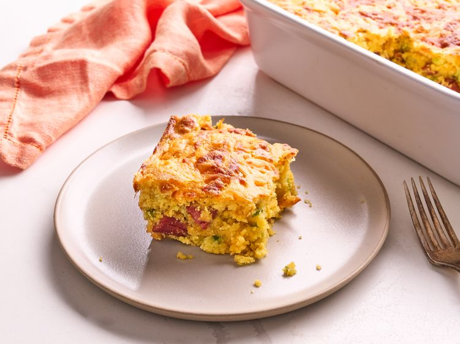

Corndog Casserole

Description
This cheesy corndog casserole has the comforting flavors of a corndog with far less effort. Hot dogs, cheese, and corn bread mix combine in an easy casserole.
Ingredients
- 2 tablespoons butter
- 1 cup chopped celery
- 3/4 cup chopped green onion
- 8 hot dogs, cut into 1-inch pieces
- 1 cup milk
- 2 large eggs
- 2 teaspoons mustard
- 2 teaspoons hot sauce
- 2 (8 ounce) packages corn bread mix, such as Jiffy®
- 8 ounces sharp Cheddar cheese, shredded
Directions
- Preheat the oven to 400 degrees F (200 degrees C). Grease a 3-quart baking dish.
- Heat butter in a skillet over medium-high heat until melted. Add celery and onions and cook until softened, about 4 minutes. Transfer to a mixing bowl.
- Add hot dog pieces to the same skillet and cook until browned on all sides, about 5 minutes. Transfer to mixing bowl with veggies.
- Add in milk, eggs, mustard, hot sauce, cornbread mix, and 1 1/2 cups Cheddar cheese; stir until combined (it’s ok if some lumps remain). Pour into the prepared baking dish. Sprinkle any remaining cheese on top.
- Bake in the preheated oven until golden brown and set, 25 to 30 minutes. A toothpick inserted near the center should come out fairly clean. Let stand 5 to 10 minutes before serving.
Home